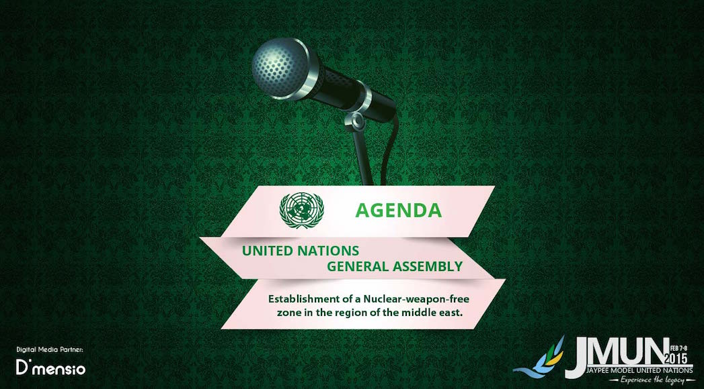

General Assembly

General Assembly
The General Assembly is one of the six principal organs of the United Nations and is the only committee with equal representation for all the member states. The GA meets annually under the president at its headquarters in New York City.
The first ever session of General Assembly was convened in 1946 in the Westminster Central Hall in London with Paul-Henri Spaak from Belgium as the president. The current president is Sam Kutesa from Uganda.
The First Committee deals with disarmament, global challenges and threats to peace that affect the international community and seeks out solutions to the challenges in the international security regime.
It considers all disarmament and international security matters within the scope of the Charter or relating to the powers and functions of any other organ of the United Nations; the general principles of cooperation in the maintenance of international peace and security, as well as principles governing disarmament and the regulation of armaments; promotion of cooperative arrangements and measures aimed at strengthening stability through lower levels of armaments.
At JMUN’15 will discuss the possibility of creating a nuclear-weapon free zone in one of the most unstable regions of the world, a highly controversial issue which promises exciting debate.